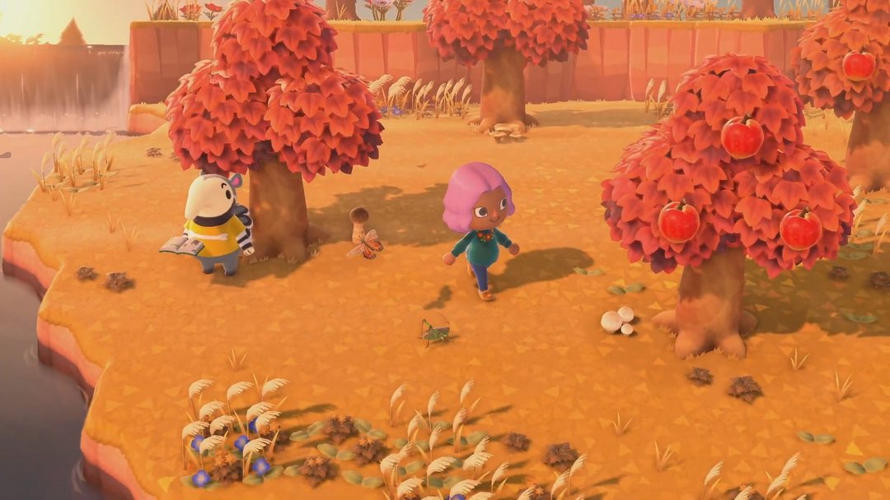

枫叶季：11 月 16 日到 25 日，用捕虫网抓枫叶
一年只有 10 天：枫叶怎么抓、DIY手册从哪来，10 份家具的材料一张表
枫叶季和樱花季一样，一年只有 10 天：北半球 11 月 16 日到 25 日，南半球 5 月 16 日到 25 日。这几天红色的枫叶在半空中飘，挥捕虫网抓下来就是枫叶。
枫叶能做 10 份DIY：红色落叶、枫叶雨伞、石水盆～枫叶～、大树果树……全做一遍要 57 片枫叶。其中两份还要橡栗和松果，好在橡栗·松果季这时还没结束，可以一起攒。

秋天的岛，树叶染成了红色（图：Nookipedia）
01哪 10 天
日期按游戏里的时间算，南半球比北半球晚半年。
| 半球 | 开始 | 结束 |
| 北半球 | 11 月 16 日 | 11 月 25 日 |
| 南半球 | 5 月 16 日 | 5 月 25 日 |
游戏里的一天从早上 5 点算起，所以第 10 天的深夜，一直到第二天早上 5 点前，都还算枫叶季。
这 10 天落在蘑菇季（北半球 11 月、南半球 5 月）和橡栗·松果季里面，三样材料能一起捡。11 月第四个星期四的感恩节，有些年份也落在这 10 天里。
02枫叶怎么抓
枫叶在空中飘着，跟抓虫一样，拿捕虫网对准挥过去就行。一片卖 200 铃钱，卖掉不值，留着做家具。
枫叶在口袋里一格只能叠 10 片，口袋很快就满。抓一阵就放进收纳，腾出地方再接着抓。
小提示枫叶能放进收纳。季节快结束时多攒一些收起来，过了季也能接着做；这一季的DIY手册没学全也不要紧，以后学到了再拿出来用。
03DIY手册从哪来
10 天里要学 10 份，时间紧，三个来路都要用上。
最主要的是打气球。枫叶季里飘过的气球，打下来会掉这一季的DIY手册，一直掉到你把这一季的学全为止。这几天看见气球就追。
其次是第一天去服务处。北半球 11 月 16 日、南半球 5 月 16 日，狸克或西施惠会送你一份「红色落叶」。只有第一天送。
第三个是航平的游船，见下面。
错过了：坐航平的船去补
码头的航平每天能载你出海一次，收 1,000 Nook里数。偶尔会开到停在某个季节的岛上，枫叶岛就是其中一种，每种季节岛的几率大约 3%。到了那座岛，能抓到枫叶、摇到橡栗，海边的瓶中信里也可能装着枫叶的DIY手册。
几率不高，只能算碰运气。还有一个前提：你自己的岛上得先过过这个季节，才可能被带到对应的岛。把旅馆第一间 VIP 客房布置好以后，航平每天还能多跑一趟（收 100 旅馆券），撞上的机会也多一点。
0410 份DIY手册一览
| DIY手册 | 材料 |
| 红色落叶 季节第一天服务处送 | 枫叶 3、杂草 4 |
| 枫叶墙 | 枫叶 10、木材 5、杂草 5 |
| 枫叶地板 | 枫叶 10、杂草 15 |
| 枫叶地毯 2.0 加入 | 枫叶 6 |
| 落叶凳子 | 枫叶 3、木材 3 |
| 石水盆～枫叶～ | 石头 10、枫叶 3 |
| 树果拱门 | 松果 4、橡栗 5、枫叶 5、树枝 15 |
| 大树果树 | 松果 5、橡栗 4、枫叶 4、树枝 8、黏土 4 |
| 枫叶斜挎包 | 枫叶 6 |
| 枫叶雨伞 | 枫叶 7 |
10 份全做一遍，一共要枫叶 57 片，另外还要杂草 24、树枝 23、石头 10、橡栗 9、松果 9、木材 8、黏土 4。
小提示树果拱门、大树果树要的橡栗和松果，得摇树攒（橡栗摇阔叶树、松果摇针叶树）。北半球的橡栗·松果季到 12 月 10 日，南半球到 6 月 10 日，枫叶季结束后还能接着摇。
05先做哪几件
红色落叶：第一天送的那份，一堆红叶铺在地上，3 片枫叶就能做。
枫叶墙 + 枫叶地板：把屋子布置成红叶林，各要 10 片枫叶，是这一季最费枫叶的两样。
树果拱门：3 格宽的拱门，挂满树果和枫叶，摆在路口很好看，能改造换颜色。
枫叶雨伞、枫叶斜挎包：拿在手上、背在身上的小东西，秋天拍照用。
石水盆～枫叶～：水盆里漂着枫叶，要 10 块石头，适合摆在日式庭院里。
06版本变化
枫叶地毯这份DIY手册是 2.0 加的。航平出海是 2.0 加的；布置好旅馆第一间 VIP 客房后航平每天多跑一趟，是 3.0 加的。
动森圈圈 · 小程序和 iOS App 都搜「动森圈圈」